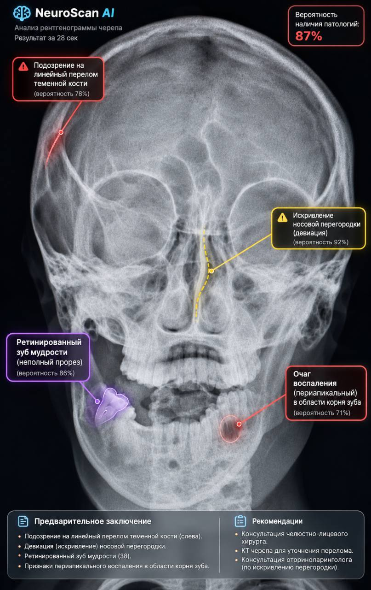
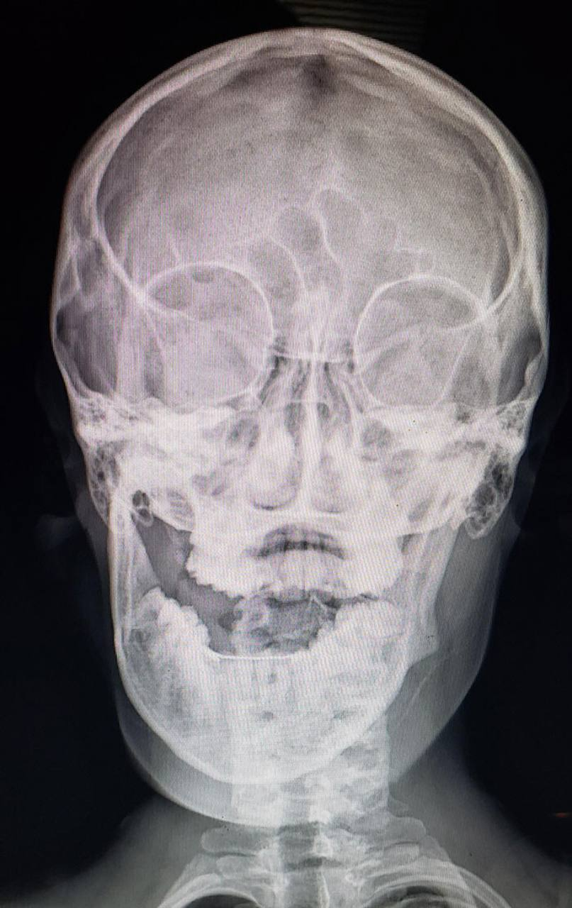

Долгое ожидание
Очередь на описание снимков задерживает выдачу результатов пациентам.
NeuroScan помогает находить зоны риска на КТ, МРТ и рентгеновских снимках и готовит черновик описания. Окончательное заключение всегда остаётся за врачом.

Демонстрация интерфейса · изображение предоставлено для конкурсного проекта
Высокая нагрузка увеличивает время ожидания результатов и усложняет поиск небольших изменений. Ассистент помогает врачу сосредоточиться на важных деталях.
Очередь на описание снимков задерживает выдачу результатов пациентам.
Повторяющиеся операции отнимают время квалифицированного специалиста.
Небольшие зоны изменений требуют особенно внимательной повторной проверки.
Передвиньте ползунок, чтобы увидеть, как разметка NeuroScan выделяет потенциальную зону риска. Слева исходный снимок, справа версия с демонстрационной разметкой NeuroScan. Содержание разметки требует оценки врача.
Пример интерфейса создан для конкурсной демонстрации.
Сценарий работы предусмотрен в условиях конкурсного кейса и требует технической проверки при реальном внедрении.
Снимок поступает из PACS-системы клиники по защищённому каналу.
Модель выделяет подозрительные участки и формирует черновик описания.
Рентгенолог проверяет разметку, оценивает контекст и подписывает заключение.
Для применения ИИ в клинике необходимы подтверждённые медицинские характеристики, защита данных и разрешительная документация.
В кейсе указаны чувствительность 94,8% и специфичность 92,1%. Протокол испытаний не приложен.
Концепция предусматривает обезличивание, закрытый VPN-контур и размещение серверов в РФ. Реализация требует аудита на соответствие ФЗ-152.
В условиях кейса упомянуто регистрационное удостоверение Росздравнадзора. Номер и документ не предоставлены.
Показатели и юридический статус на этой странице — условные вводные конкурсного задания, а не подтверждённые свойства существующего медицинского изделия.
Ориентиры из кейса помогают обсудить потенциальный эффект. Фактическая экономика зависит от объёма исследований, процессов отделения и стоимости внедрения.
потенциальный рост пропускной способности отделения
заявленное снижение риска врачебной ошибки
ориентир окупаемости из условий кейса
Показатели не подтверждены данными действующих клиник и не являются прогнозом результата.
Для регионального отделения важны время выдачи заключений, поддержка врача при ночных сменах и прозрачный процесс проверки снимков.
Запросите демонстрацию интерфейса и обсудите возможный сценарий внедрения. Доступ предоставляется после подтверждения статуса клиники.